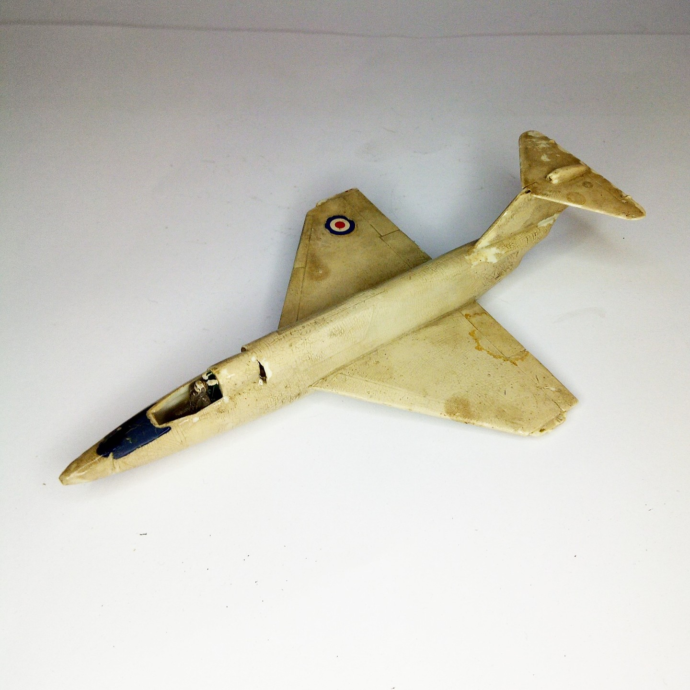

Aerei · scale model archive
Saunders-Roe S-R.53
Saunders-Roe S-R.53 — Kit: Airfix, Scale: 1/72. My favourite, I played a lot wit it but it managed to survive neverhetess, and witha stiff upper lip…

Photo gallery
English description
My favourite, I played a lot wit it but it managed to survive neverhetess, and witha stiff upper lip
#1/72 #Airfix
Descrizione italiana
Il mio preferito, ci ho giocato una lot con lo but lo managed una survive nevertheless, e con una stiff upper lip.